加利西亚语
巴斯克语
加泰罗尼亚语
西班牙语
西班牙语
加泰罗尼亚语（14%）
加利西亚语（5%）
巴斯克语（2%）
Barcelona
Granada
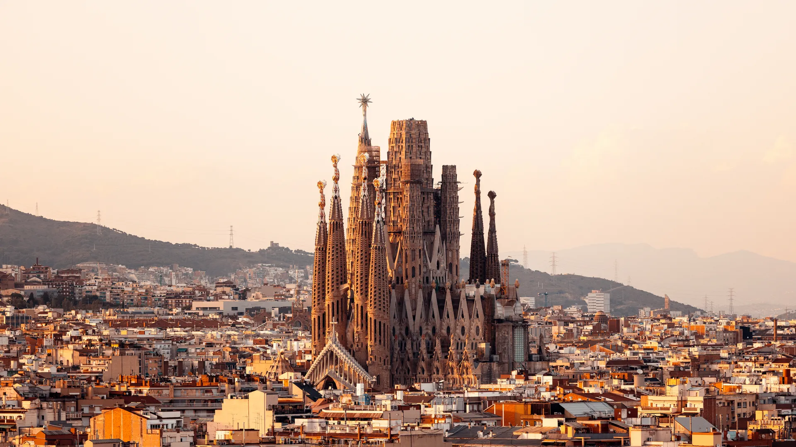
圣家堂
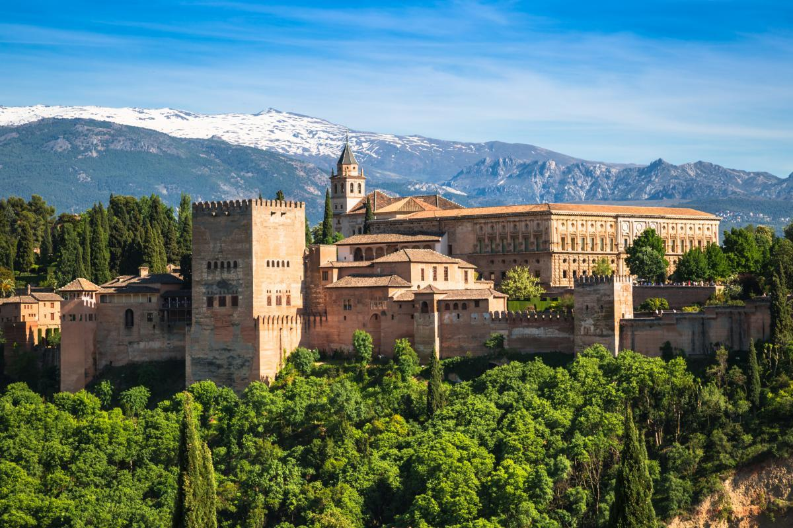
阿尔罕布拉宫
Asturias

阿斯图里亚斯
Gipuzkoa

吉普斯夸
Navarra

纳瓦拉
Vielha
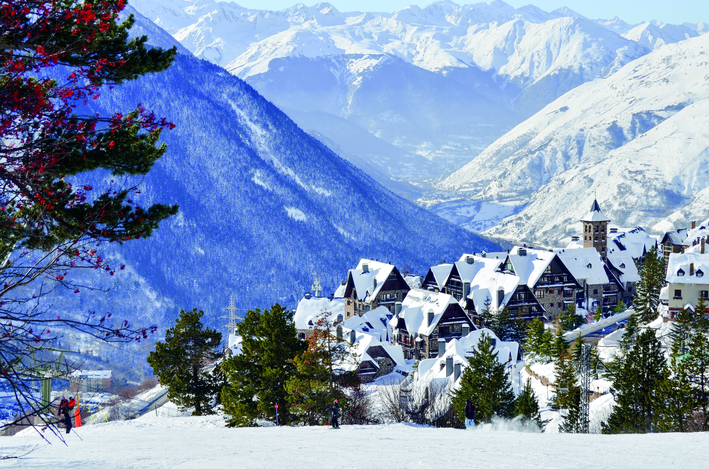
维耶拉
Lleida

莱里达
Menorca

梅诺卡岛
Almería
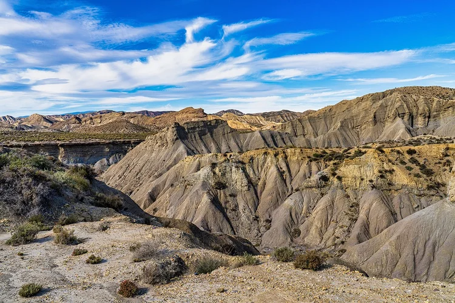
阿尔梅里亚
Cádiz
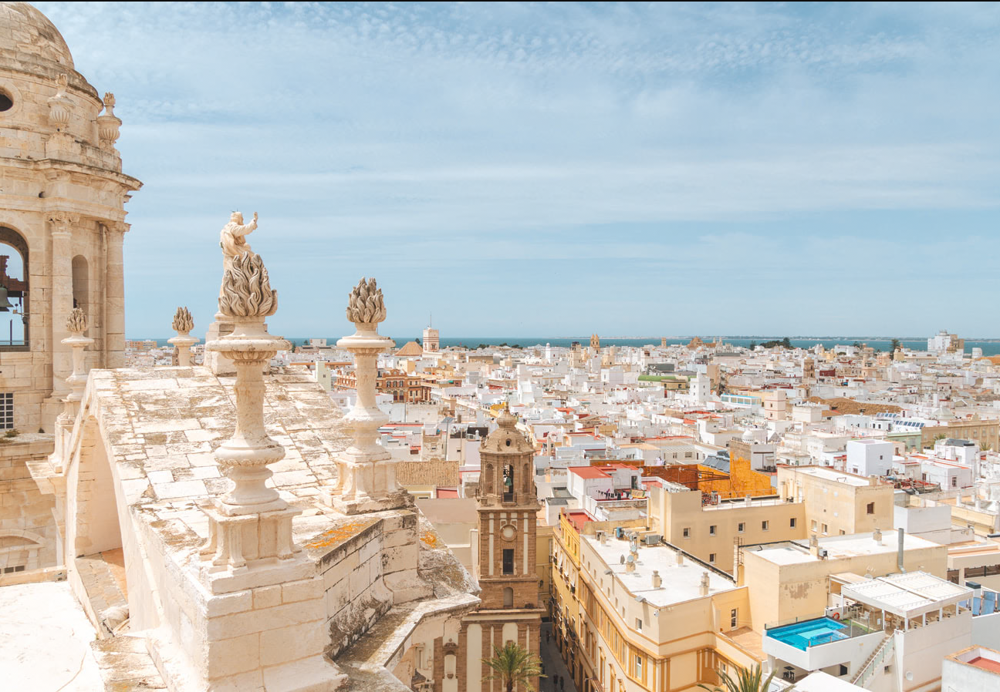
加的斯
Sevilla
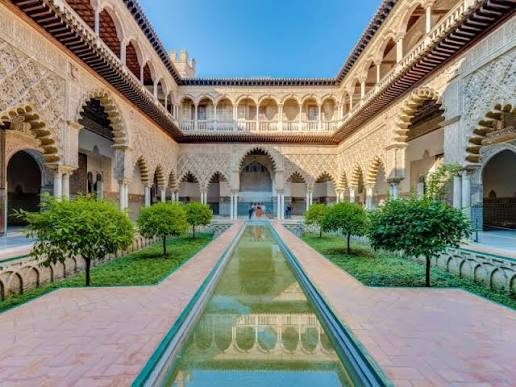
塞维利亚
Extremadura
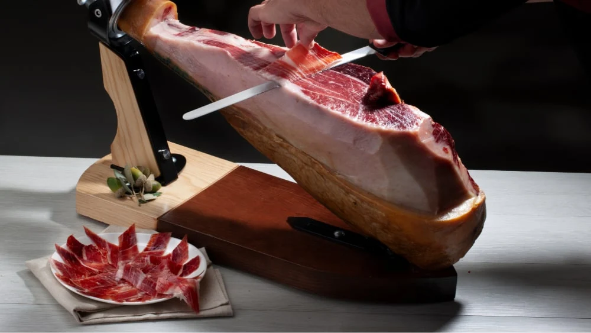
火腿
La Rioja

红葡萄酒
Valencia
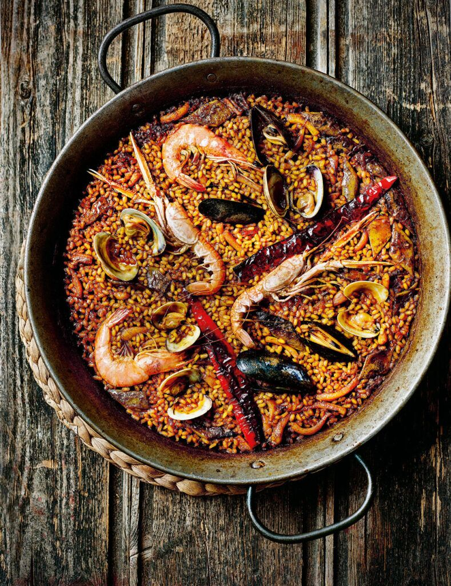
西班牙海鲜饭
Granada
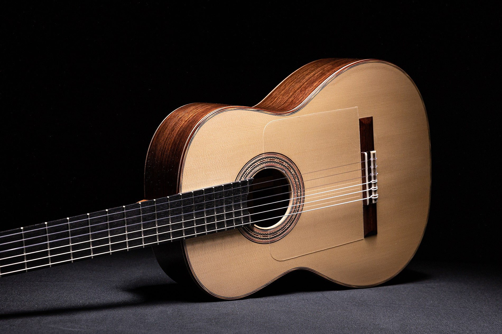
古典吉他
西班牙总人口—
人均年收入15,948 欧元
谢谢大家

赫罗纳
Girona
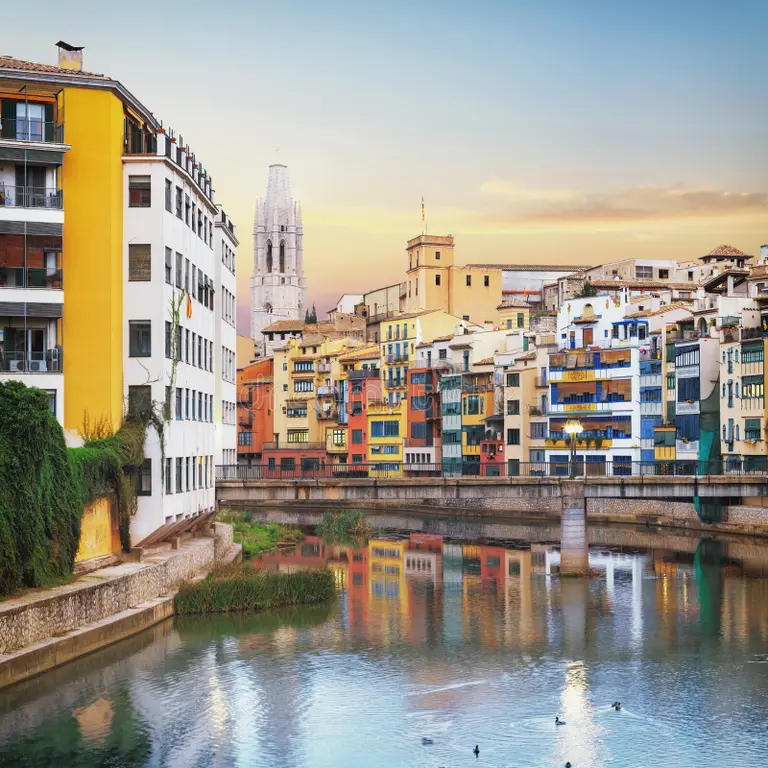
赫罗纳
Tossa de Mar
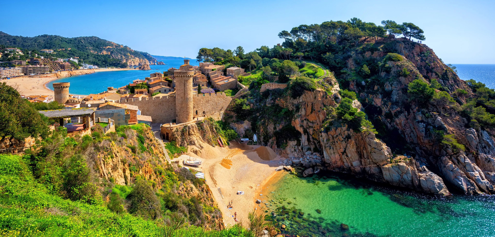
托萨德马尔
L'Escala
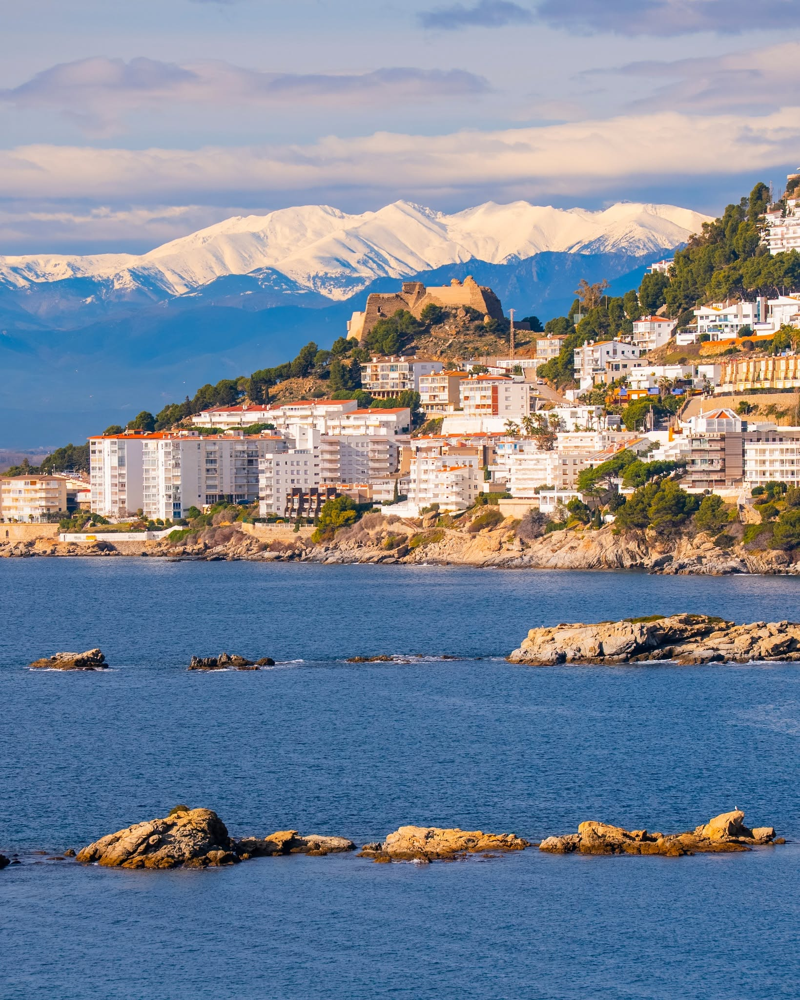
莱斯卡拉
马德里
向下滑动
高度 — 公里